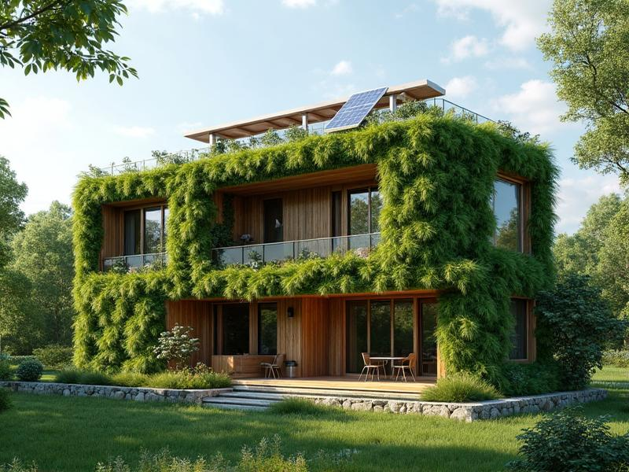
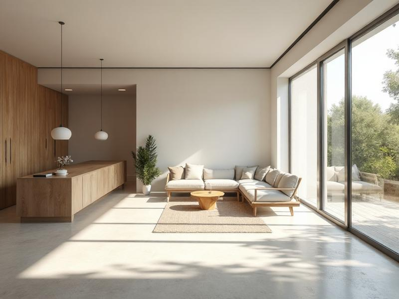
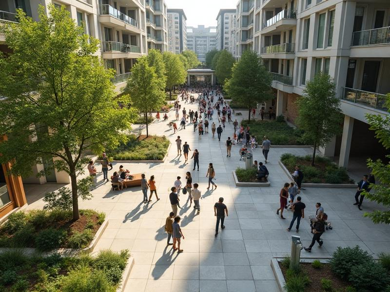

SUSTENTABILIDADEO Futuro da Arquitetura Sustentável
Explorando como as práticas arquitetônicas modernas estão evoluindo para enfrentar desafios ambientais mantendo a excelência em design.
LEIA MAIS
Explorando a interseção entre arquitetura, design e experiência humana por meio de análises cuidadosas e perspectivas contemporâneas.

SUSTENTABILIDADEExplorando como as práticas arquitetônicas modernas estão evoluindo para enfrentar desafios ambientais mantendo a excelência em design.

DESIGNComo os princípios do design minimalista estão remodelando a arquitetura residencial contemporânea e os espaços interiores.

PLANEJAMENTO URBANOExaminando o papel do planejamento urbano cuidadoso na criação de comunidades vibrantes e inclusivas por meio do design arquitetônico.
Inscreva-se na nossa newsletter para os últimos artigos sobre arquitetura e design